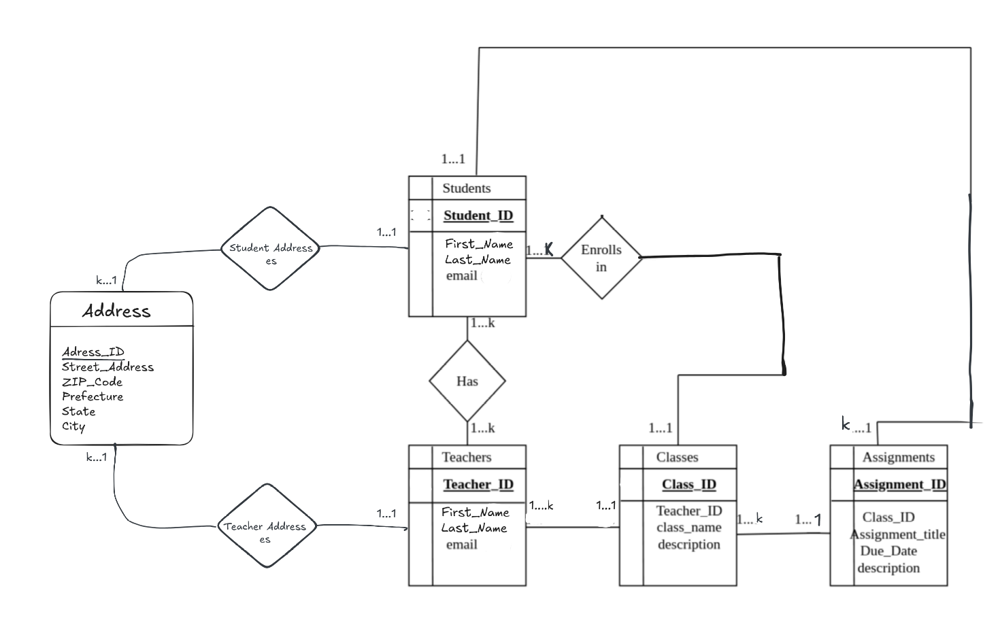
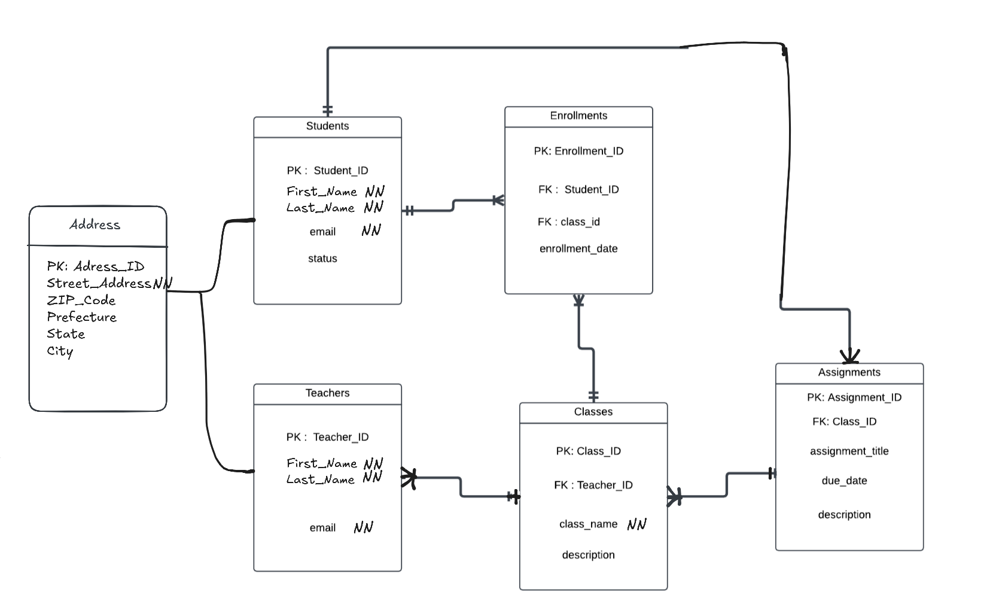

CS 222/326: Online Classes Management System
made by Svetlana Tadevosyan
This project is made for managing an online classes platform. The system is able to track classes, teachers, students and enrollments, which allows efficient storing for information. This project can also be used for the creation of educational platforms where scalability and data management are critical.
Slide 2: Problem Statement
Why This System?
- Existing systems often lack:
- Scalability for large platforms.
- Efficient organization of data.
- Intuitive interfaces for data management.
- Goal: Create a robust database to overcome these limitations.
Slide 3: Objectives
- Ensure data integrity and consistency.
- Enable easy retrieval and management of records.
- Design a scalable schema to handle future growth.
- Optimize queries for better performance.
Slide 4: Database Design
Entity-Relationship Diagram (ERD)
- Visualizes the structure of the database.

Slide 5: Relational Schema
- Representation of database tables and relationships.

Slide 6: Normalization
- Applied normalization to avoid redundancy:
- First Normal Form (1NF): Ensures atomic values.
- Second Normal Form (2NF): Removes partial dependencies.
- Third Normal Form (3NF): Removes transitive dependencies.
Slide 7: Queries and Indexing
Sample Queries
- Example 1: Retrieve all students enrolled in a class.
- Example 2: List of classes a teacher is teaching.
### Indexing
- Implemented indexing for faster query performance.
Slide 8: Features and Benefits
Key Features
- Track enrollments efficiently.
- Scalable design.
- Easy to integrate with frontend platforms.
### Benefits
- Saves time in data management.
- Supports large user bases without performance loss.
Slide 9: Future Scope
- Expand to include payment processing.
- Implement advanced reporting features.
- Integrate machine learning for personalized recommendations.
Slide 10: Conclusion
Summary
- A robust and scalable database designed for managing online classes.
- Supports essential features with room for future growth.
- Aims to simplify data management for educational platforms.